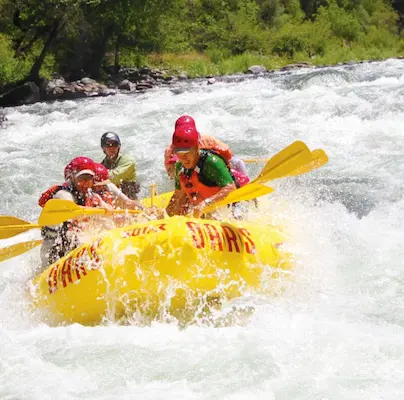
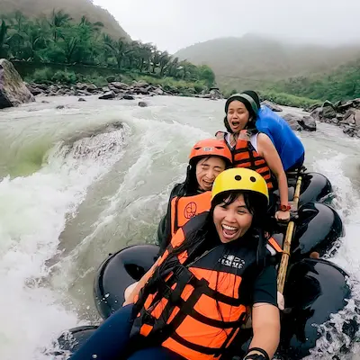
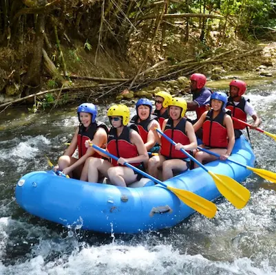
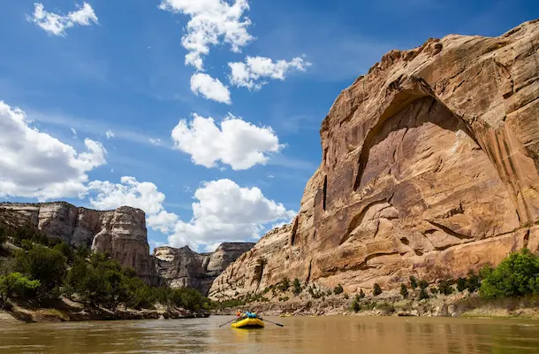

Whitewater Rafting
Ready to take the plunge?
Rafting trips offer an exhilarating way to explore rivers, challenge yourself, and bond with fellow adventurers. Whether you're a seasoned pro or a first-timer, there's a rafting experience out there for everyone. It can be a fantastic way to connect with nature, challenge yourself, and create lasting memories.

Trip #1 - Tuolumne River Rafting, California
Location: Near Yosemite National Park, California
Duration: 2-3 days
Highlights:
- Day 1: Begin your adventure with a safety briefing and gear fitting. Paddle through thrilling Class IV rapids like Rock Garden and Nemesis. Enjoy a riverside lunch and camp under the stars.
- Day 2: Tackle more challenging rapids such as Clavey Falls, a three-tiered drop that will test your skills. Take breaks to swim in calm pools and explore hidden waterfalls.
- Day 3: Conclude your trip with a leisurely float through scenic canyons, spotting wildlife along the way. Return to the starting point with unforgettable memories and new friends.

Trip #2 - Davao River Rafting, Philippines
Location: Davao City, Philippines
Duration: 1 day
Highlights:
- Morning: Start early with a muster at 7 AM in Davao City. Travel to the foothills of the mountains west of the city. Begin your rafting adventure with a safety briefing and practice session on a calm stretch of water.
- Midday: Navigate through exciting rapids, with stages designed for maximum fun and enjoyment. Take in the stunning scenery, including river and forest birds, and other wildlife.
- Afternoon: Enjoy a half-way lunch stop for a swim or relaxation on the sand. Continue rafting through more rapids before concluding the trip. Receive digital records of your adventure to share with friends and family.

Trip #3 - White River Calypso Rafting, Jamaica
Location: Ocho Rios, Jamaica
Duration: 1 hour
Highlights:
- Start: Begin your journey with a guided tour through the exotic waters of the White River. Feel the adrenaline rush as your guide skillfully navigates through various sections of river rapids.
- Midway: Experience the calypso vibes as you raft down the majestic White River. Enjoy the refreshing clean tropical breeze and breathtaking sceneries.
- End: Conclude your adventure with a relaxing float through the river, taking in the beauty of the rainforest. This short but thrilling trip is perfect for those looking for a quick yet exhilarating experience
| Trip Name | Location | Duration | Difficulty | Price | Additional Info |
|---|---|---|---|---|---|
| River Tubing | White River, Jamaica | 1 hour | Easy | $30 | Fun, laughter, and excitement |
| River Rafting | White River, Jamaica | 1 hour | Moderate | $80 | Adrenaline rush, scenic views |
| Lower Section Rafting | Cagayan de Oro, Philippines | 3 hours | Easy | Varies | 14 rapids, hotel transfers |
| Middle Section Rafting | White River, Jamaica | 4 hours | Moderate | Varies | 24 rapids, hotel transfers |
| Upper Section Rafting | White River, Jamaica | 2 hours | Hard | Varies | 14 rapids, hotel transfers |
Need to know more?
Contact Us
